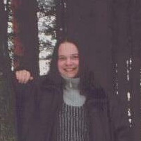

|
|
|
||
Авторы сайта учащиеся 11 класса "ОСШ №3". Лебедев Георгий - информационное наполнение и Джунковский Фёдор-информационное наполнение и дизайн.
|

|
Джунковский Фёдор Михайлович, родился в Ленинграде в 1990 году. На данный момент проживаю в городе Отрадное. Учащийся 11-го класса Отрадненской Средней Школы №3. Увлекаюсь: РОК музыкой, музыкальными инструментами, разнообразными компьютерными программами и играми, монтированием видеозаписей, общаюсь с друзьями по Интернету и непосредственно. |
|
|
Лебедев Георгий Игоревич. Мне 16 лет, увлекаюсь чтением, компьютером и почти всем, что с ним связано (за исключением программирования), а также историей и, в особенности, легендарными полководцами и историей оружия, начиная со средневековья. Люблю рок-музыку. |
Copyright © 2007
ОСШ №3 г. Отрадное
пишите нам по адресу
rolf_ps@mail.ru